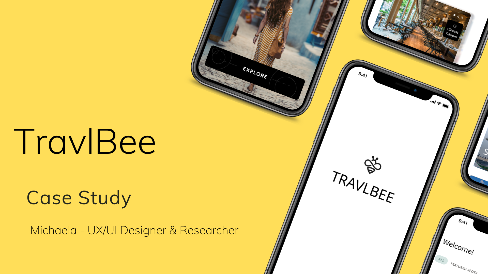
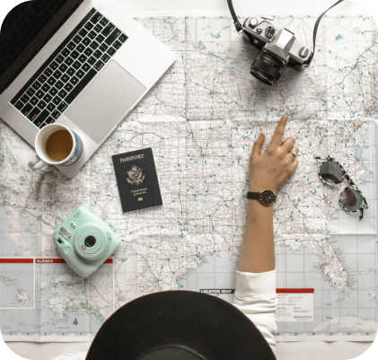
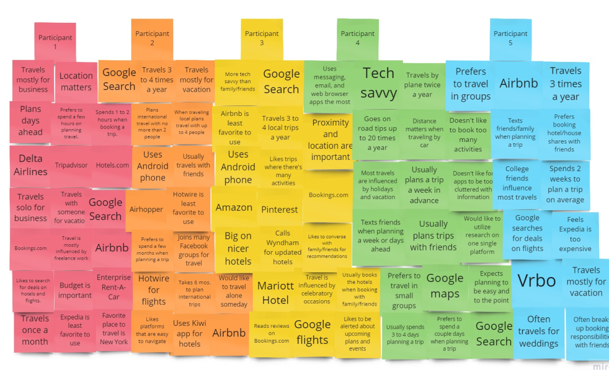
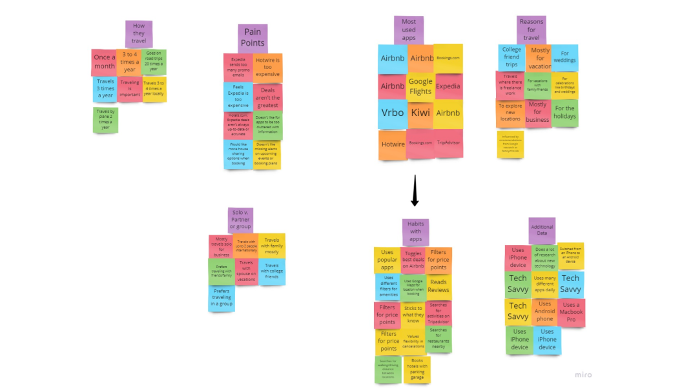
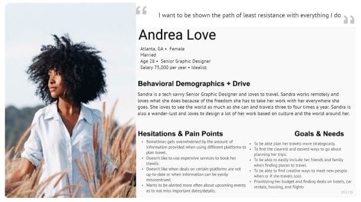
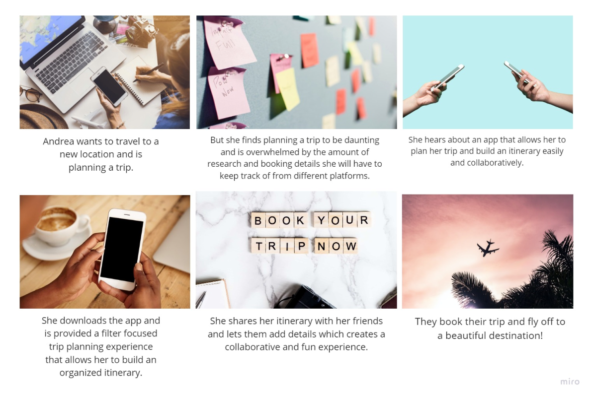

About The Project
TravlBee is an app that allows users to plan a trip and build an itinerary with the option to collaborate with other travelers creating a curated and organized experience.
Challenge
Users have a hard time sharing their itineraries with people they are traveling with in one platform. How might we create a platform that allows users to communicate and build an itinerary with others in the best way possible?
Research
User Interviews
At the discovery phase of the project, I conducted 5 user interviews to get a better understanding of the user’s needs.
What did I find?
-
Location matters to users when traveling.
-
Users mostly utilize the Google search engine when looking for locations to travel.
-
Users mostly text message friends/family when sharing traveling details.
-
Most users travel 3 to 4 times a year.
-
Most users like a simplified experience when looking for activities in a local area.

What the user is saying...
"Planning a trip is the most difficult part of travel. It would be nice to keep most of the planning and booking on one easy platform."
-Janae Whitefield
Affinity Diagram

After interviewing many different users I continued to ideate the data and separate information into categories

During our user interviews we observed that many people use a variety of platforms when planning a trip. We observed also that users don't have an organized way of keeping track of all of their booking details and it can be hard to share itinerary information with other fellow travelers.
User Persona

Andrea Love, a tech savvy Graphic Designer needs a platform that allows fast and easy ways to plan her travels in order to make the experience more fun and less daunting.
Storyboard
